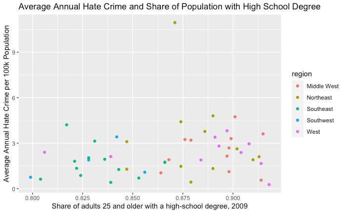

As of recent history, hate crimes have become an unfortunate growing presence in the vacillating political landscape of the United States. In an effort to better understand how socioeconomic factors affect hate crimes, we examined a data set provided from FiveThirtyEight that utilizes data from the Southern Poverty Law Center (SPLC) exploring the sudden influx in hate crimes that occured ten days after the presidential election in 2016, FBI data that documents hate crimes reported from 2010 through 2015, and socioeconomic factors such as median household income, share of the population that is unemployed and more.
In the original article exploring this data set, we learn that the analysis conducted by the original researchers found that only two variables remained significant in both model inputs pre and post election: income inequality (gini_index) and education (share_population_with_high_school_degree). Within our own research, we hoped to learn more about the correlation between these variables, in addition to the share of U.S. voters who voted for Trump in the 2016 presidential election. Since 2016, it is fair to say that the country has become significantly more divided on political issues, with BLM protests and the United States Capitol attack taking place in 2021. Our motivation is for our analysis and visualization of the data set to provide more insight into how these various factors trend in regards to each other, how hate crimes vary by state, as well as what factors within those states might be tied to hate crime rates.
After reading the article from the dataset, we decided to come up with a few hypotheses of our own to try and get a better understanding of the data and establish potential routes of visualization. They are as follows:
To answer these questions, we created several initial graphs to give us a better understanding of how to approach our final visualization. We can see from the pairs plot that the 3 variables, share_population_with_high_school_dergee, gini_index, and share_voters_voted_trump, have some sort of correlation with avg_hatecrimes_per_100k. While the share of population with high school degrees has the lowest correlation coefficient out of the two variables, our research into related work showed that education plays an important role in average hate crime and, thus, thought it was worthwhile to keep and further look into this variable. Another notable point from the pairs plot is that the share of 2016 US presidential voters who voted for Trump has a negative correlation with average annual hate crime.
Next, we delve into the 3 predictors and created individual scatterplots to clarify individual relationships with average annual hate crimes. To briefly comment on each plot:

From our EDA, the insights that we got were consistent with our hypotheses: There was a story to be told with the 3 predictors about annual average hate crime. Something that our scatterplots lacked was the ability to compare across variables and between states. Thus, we decided the best way to visualize this data was with a choropleth map which would allow us to visualize comparisons and similarities while preserving the integrity of individual state information.
The overarching problem that this map seeks to address is whether there is a strong correlation between any of these variables in relation to the number of hate crimes. While we were able to find correlation coefficients within our EDA, our visualization allows for users to easily compare these variables state by state easily. For example, when initially interpreting the map and analyzing the average annual hate crimes per 100,000 population, FBI, 2010-2015, we can see that North Dakota scores very highly compared to the rest of the nation and has a value of 4.7. In order to understand this state better, we can look into how the share of 2016 U.S. presidential voters who voted for Trump; by simply changing the toggle, we can see that North Dakota also had a high percentage of 64%. Furthermore, we can observe that it has a Gini Index of 0.433, and a whopping 0.901 share of adults 25 and older with a high-school degree.
Overall, we do see overarching themes of states that have a higher amount of average annual hate crimes and those that have lower values. In general, those states that are reported to have higher average annual hate crimes also have greater amounts of Trump voters, greater income inequality and lower amounts of adults over 25 with high school degrees. Though we cannot make causal claims, we can infer that improving these socioeconomic values can only level average annual hate crimes across states.
We believe that our visualization makes for an easy, digestible way for even those without a lot of previous knowledge about socioeconomic variables to understand the factors at play in regards to hate crimes per state. It also allows for our users to actively explore what variables hold greater significance in certain states, and which ones have unique outliers.
For example, an individual may be interested in parsing through such data if they were to move to a new state and wanted to gauge hate crimes in that state. The toggle allows users to focus solely on hate crime numbers, and provides an easily understandable color-coded comparison method for visual analysis. Further, this visualization acts as a foundation for those interested in social justice issues and want to understand how a predictor can cause more or less annual average hate crimes. For example, if someone was interested in exploring the Gini Index and how income inequality affects different states, they would be able to toggle between that particular variable and get state specific information as well as compare it with other predictors.
Additionally, although the other socioeconomic factors were included in the toggle mainly to determine correlation to average annual hate crimes, separately, they also provide important data that an individual can utilize to get a holistic understanding of the state at a glance.
Some limitations of this application include missing values, outdated numbers, and low global validity. Though it does reveal new insights, we must also consider that there may be external factors affecting the reported numbers and correlation does not equal causation. For example, since this data was taken from the year 2016, the polarizing election may have caused a rise in annual hate crime that wouldn’t have happened in a normal year. Also, this data only encompasses the United States of America, but if we were to look at other countries, we may be able to find similarities between the predictors and average annual hate crimes, thereby discovering more insights into the chosen predictors.
There is a lot of future work that can be done to try to better utilize this information to try to make real change within communities. First and foremost, we believe that this information would still be relevant to hate crimes today, especially with the data over the past two years. Future studies should be encouraged for continued data collection; our choropleth graph will still be able to provide valuable insight regarding state by state correlation to each of these socioeconomic variables, as well as explore how these relationships have changed and developed over the course of 5+ years. This way, we can try to identify key factors that are correlated and lead to more hate crimes.
If this is the case, we could consider creating several choropleth graphs each focused on different time periods that cover the same various socioeconomic variables. This would allow users to have an easier time identifying how trends have changed over time and easily compare them without having an overwhelming amount of toggles on one visualization that could compromise usability.
We feel that with the insight that our visualization can bring, in addition to the information we discovered through our EDA, to cause real change in minimizing hate crimes across the country, this information could be brought to local NGOs within specific states to try to influence policy makers and legislation to address these issues and work on lowering hate crimes.